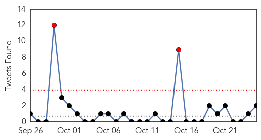

30 Day Trends
Web: 0 alerts, 0 warnings
Twitter: 2 alerts, 0 warnings
Top Articles:
- 0.999
- Bangkok's Bumrungrad Hospital treated Thailand's first MERS case
- 0.997
- 83% of Korean MERS cases stemmed from 5 patients
- 0.995
- South Korean man becomes first MERS-related death since July
- 0.994
- MERS patient deaths reach 37-INSIDE Korea JoongAng Daily
- 0.993
- South Korean man first MERS-related death since July
- 0.976
- Hand Foot and Mouth Disease Could Spike Among Kids
- 0.974
- Governor Pat McCrory urges all to protect themselves from the flu
- 0.961
- SKorea: MERS death toll rises for first time in months
- 0.954
- 93 Sick After Shigella Outbreak at California Restaurant
- 0.928
- Shigella: California Outbreak Grows
- 0.924
- San Jose Shigella Outbreak: What We Know
- 0.917
- Number of cases grows in Bay Area shigella outbreak
- 0.917
- Chicago Tribune
- 0.917
- Chicago Tribune
- 0.917
- Chicago Tribune
- 0.917
- Chicago Tribune
- 0.917
- Chicago Tribune
- 0.912
- Shigella Outbreak Sickens 110 People in California
- 0.903
- Flu season is here
- 0.894
- Shigella Outbreak Linked To San Jose Restaurant
- 0.869
- Nevada officials hope school break will stop norovirus
- 0.857
- Flu jabs aim to increase protection
- 0.725
- Prepare for a hospital visit and protect yourself
- 0.702
- Eurosceptic conservatives claim victory in Polish poll
- 0.702
- Ivory Coast hopes for peaceful ballot as country heads to polls
- 0.702
- Turnout low as Congolese vote on extending president's term
- 0.699
- World Health Organization experts urge demo tests before wider use of malaria vaccine
- 0.696
- CDC cautions over enterovirus D68 as sample tests urged
- 0.663
- Gavi and Global Fund Statement on Malaria Vaccine Recommendations - World
- 0.589
- SITTING IN: An initiative with no teeth
- 0.589
- SITTING IN: An initiative with no teeth
- 0.589
- SITTING IN: An initiative with no teeth
- 0.582
- South Australians warned of salmonella risk linked to meats cooked on spits
- 0.567
- Haze from Indonesian fires now hits Philippines
- 0.567
- Haze from Indonesian fires now hits Philippines
- 0.565
- Young Alzheimer's Patients Show Diversified Brain Function
- 0.546
- Imperial couple visit museum detailing painful 'itai-itai' disease outbreak
- 0.520
- Health Secretary Jeremy Hunt 'misrepresented' health study
- 0.513
- Health Minister Warns Russia's HIV Epidemic Could Spiral Out of Control
- 0.513
- Using Yelp To Avoid Food-Poisoning Outbreaks
- 0.512
- Life-giving jal threatening lives in Delhi
Top Tweets:
- 0.647
- “It's really impossible to get the flu from the flu vaccine."
- 0.506
- RT: Pas de bulletins de vote disponibles au bureau 4 du centre de vote Damoclès Vieux dans la commune de Carrefour Haiti
Web/News Articles

Tweets
Article Locations

Article Confidences